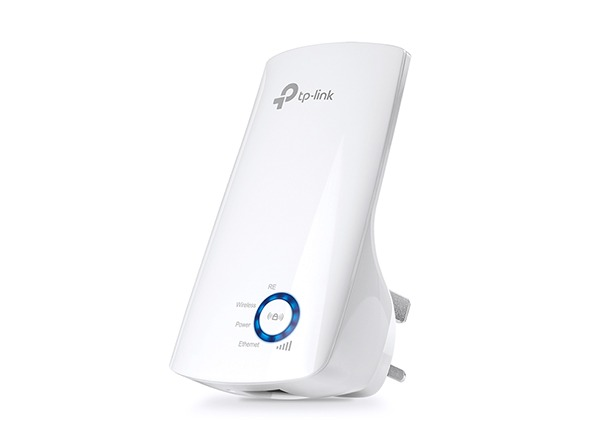
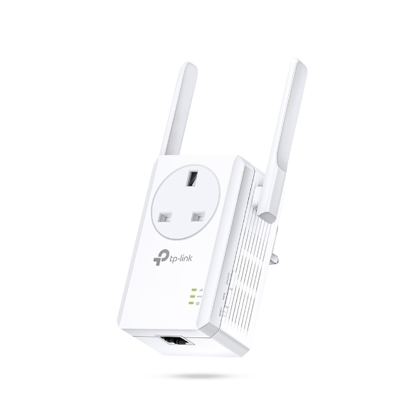
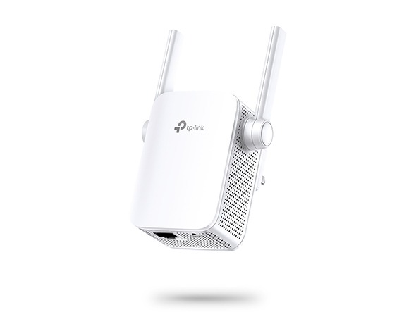
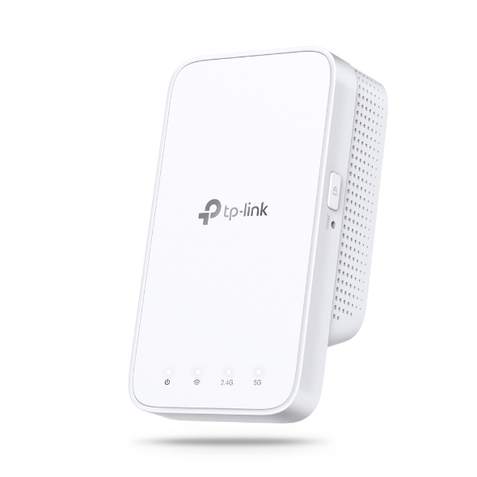
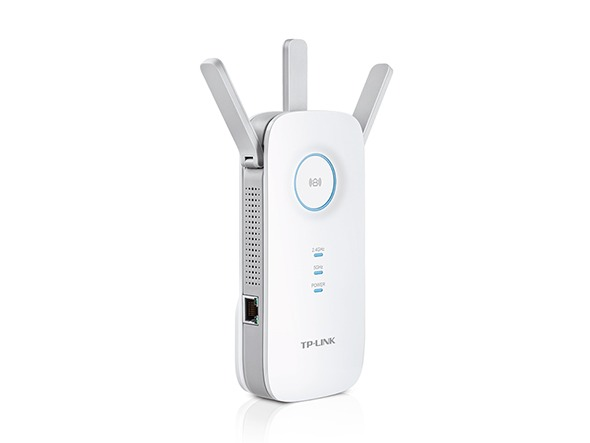
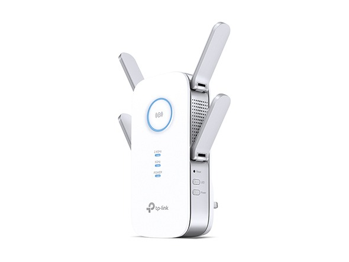

TL-WA850RE
TL-WA850RE
300Mbps Wi-Fi Range Extender
- Range Extender mode boosts wireless signal to previously unreachable or hard-to-wire areas flawlessly
- Miniature size and wall-mounted design make it easy to deploy and move flexibly
- Easily expand wireless coverage at a push of Range Extender button
- Ethernet port allows the Extender to function as a wireless adapter to connect wired devices
- Tether App allows easy access and management using any mobile device
- LED Control function includes a Night Mode for peaceful sleep
- Works with any Wi-Fi router or wireless access point
- See More

TL-WA860RE
TL-WA860RE
300Mbps Wi-Fi Range Extender with AC Passthrough
- Range Extender mode boosts wireless signal to previously unreachable or hard-to-wire areas flawlessly
- Miniature size and wall-mounted design make it easy to deploy and move flexibly
- Extra power socket making sure that no power outlet is going to waste
- 2 fixed external antennas provide excellent Wi-Fi coverage and reliability
- Easily expand wireless coverage at a push of Range Extender button
- See More

RE305
RE305
AC1200 Wi-Fi Range Extender
- Brings Wi-Fi dead zone to life with strong Wi-Fi expansion at combined speed of up to 1.2Gbps
- Operates over both the 2.4GHz band(300Mbps) and 5GHz band(867Mbps) for more stable wireless experience
- Intelligent signal light helps to find the best location for optimal Wi-Fi coverage by showing the signal strength
- Works with any Wi-Fi router or wireless access point
- See More

RE300
RE300
AC1200 Mesh Wi-Fi Range Extender
- Extends dual-band Wi-Fi across your home to eliminate Wi-Fi dead zones.
- Creates a Mesh network by connecting to a TP-Link OneMesh router for seamless whole-home coverage
- Operates over both the 2.4 GHz band (300 Mbps) and 5 GHz band (867 Mbps) for more stable wireless experience.
- Smart signal indicator helps to find the best location for optimal Wi-Fi coverage by showing the signal strength.
- Push the WPS button to easily set up a Mesh network you can uniformly manage from the Tether app or Web UI.
- Works with any Wi-Fi router or wireless access point.
- See More

RE450
RE450
AC1750 Wi-Fi Range Extender
- Expand Wi-Fi Network for Ultimate Performance
- Expanded 450Mbps on 2.4GHz + 1300Mbps on 5GHz totals 1750Mbps Wi-Fi speeds
- Three adjustable external antennas provide optimal Wi-Fi coverage and reliable connections
- Gigabit Ethernet port acts as a wireless adapter to connect a wired device to your network at gigabit speed
- Intelligent signal light helps to find the best location for optimal Wi-Fi coverage by showing the signal strength
- Works with any Wi-Fi router or wireless access point
- See More

RE650
RE650
AC2600 Wi-Fi Range Extender
- Extended Range -- Four fixed external antennas extend Wi-Fi coverage
- 4-Stream for AC2600 Dual Band Wi-Fi -- Simultaneous 800Mbps on 2.4GHz + 1733Mbps on 5GHz
- 4x4 MU-MIMO -- Simultaneously transfers data to multiple devices for 4x faster performance
- Beamforming Technology -- Send targeted Wi-Fi signal to individual devices for stronger connections setup.
- Gigabit Ethernet Port -- Provide faster wired connections to smart TVs, computers and gaming consoles.
- Intelligent Signal Light -- Helps to determine the best location for optimal Wi-Fi coverage by indicating the signal strength in the current placement
- AP Mode -- create a new Wi-Fi access point to enhance your wired network with Wi-Fi capability
- TP-LINK Tether App -- Easily access and manage your network using any iOS or Android mobile device
- Ultimate Compatibility -- Extend the range of any Wi-Fi router or wireless access point
- See More